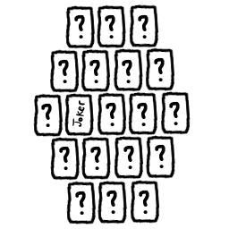

Starward is a collaborative worldbuilding roleplaying game. Players create the world that they play in as they play. The game begins with the players each creating a set of profiles:
These profiles create lore for the game universe that is only known by the player that writes them. As the game progresses, the lore in these profiles is revealed to the rest of the players and characters. Part of the game is connecting the profiles you create with the other players' profiles.
Initially, the game only prompts the players to provide surface details in their profiles. Later, the game prompts the players to furthur develop their profiles. This doesn't mean that a particularly ambitious player can't develop their profiles on their own. After all, the profiles are theirs to write.
Players may use whatever means at their disposal to create their profiles, but Starward provides worksheets that can be filled out in Starward Field Manuals. Each player gets their own Starward Field Manual that also includes a section for the character that they will be playing (see below).
The profiles that a player creates are intended to be disconnected. Players should create each profile as if it was the only profile they created. As the game plays out, the player may discover that their profiles are connected to each other or other players' profiles.
A player creates their character only after they've completed inital development of their profiles. A player's character will have its own profile in the player's Manual. A player is encouraged to develop their character as much as they'd like. As with other profiles, certain aspects of a player's character will be discovered as the game progresses.
Starward is a tabletop roleplaying game (TTRPG) intended for 3-5 players, though the more players the richer the world. Players roleplay as characters in a space adventure. These Player Characters (also known as PCs) are all part of the crew of a starship. PCs encounter threats, make alliances, uncover treasure, and document the new and strange universe they discover. This is where Starward diverges from most other TTRPGs.
Starward is GM-less, meaning that there is no single person that knows everything about the world or controls the enemies. Instead of personal character advancement, the characters' ship advances along multiple development trees. Instead of dice, Starward uses cards when it becomes necessary to determine a random outcome. Lastly, Starward is narrative-based, meaning that the game sacrifices hard and fast rules for a more classically heroic story experience. Combat in Starward is minimal; characters don't have inventories that the players have to manage.
Starward is a game about finding your way in a vast universe. Players decide what story they want to tell. Instead of a strict map, characters travel narratively between points of interest. The players discover these points of interest as they play, creating a history of their travels. Characters can also travel through uncharted space to find more points of interest, search for clues, or blaze trails.
PC. Stands for "Player Character." Refers to any character played by a player.
NPC. Stands for "Non Player Character." Refers to any character created by the system.
Creature. Refers to any living thing. This is important because the players will encounter all manner of life in the universe they create.
Deck. Refers to a collection of cards. The rules will call for a deck to be assembled. When this happens the contents of the deck will be specified.
The core of Starward is the Wayfare Engine, a method of drawing cards to create events (commonly called encounters in other systems) to interact with. Starward expands on the base Wayfare Engine with ways to incorporate your Field Manuals and other procedural elements to create diverse and rooted events.
To determine the kind of event encountered, simply draw a card from some source of cards, such as a deck or from a map (explained a little later). Once you have your event card, consult the following table, reading from left to right.
Each event can take place in space while in the group's ship, or on a planet. Here is a brief summary of each event type.
An Advent is some milestone of discovery. The group gains knowledge about some aspect of the world.
A Calm is a period where very little happens outside the group. This is an opportunity for players and characters to roleplay between themselves.
A Combat is some attack by an outside force. Enemies of the group seek to do them harm.
When a PC engages an enemy in combat, they start a duel. Assemble a deck of two cards from each suit. The PC's player then draws from this deck to determine the outcome of the duel, based on the drawn suit. A PC may have a feature that lets them alter the duel deck, usually by adding a card of a certain suit.
All creatures can take a certain number of hits before being killed or knocked unconscious. For PCs, this number is usually 2. For NPCs, the number can vary.
A Counsel is a roleplay interaction with a faction outside of the group, usually requiring diplomacy and tact to resolve some issue the outside faction faces.
An Emergency is a sudden disaster that the group faces that will result in harm to the group.
All events have Connections to the game universe, Stakes that make them risky, and a Reward for completing them.
As suggested in The Wayfare Engine, the players in your group can take turns drawing from a complete deck of cards, excluding the jokers. This method is straightforward and very fast. It works well for quick travel events, when you just need one or two. However, Starward expands on this by having the group construct a map each time they enter what's called a sector.
Sectors are large areas of unexplored area, either in space or on a planet. To construct a sector map, assemble a deck of 17 random cards and both jokers, for a total of 19 cards.
Keep one joker face up in the deck and shuffle it, keeping the other cards face down. Lay out each card in a hexagonal pattern, like the image below. The face-up joker acts as your group's entrance into the sector, where they start. From there the group travels around, flipping each card (or tile) to determine their event. When the group discovers the other joker, they can leave the sector. This is explained in greater detail later.
An Advent is some milestone of discovery. The group gains knowledge about some aspect of the world.
What aspect of the game universe does the Advent expand your knowledge about?
How specific and deep is the knowledge being gained?
What risk does gaining this knowledge pose?
Besides the knowledge itself, are there any additional rewards?
A Calm is a period where very little happens outside the group. This is an opportunity for players and characters to roleplay between themselves.
How, if at all, does this Calm connect with the rest of the game universe?
What activity occupies the Calm?
What kinds of risks must be taken to enjoy the activity?
Besides the social benefits of relaxing, what other rewards do you enjoy?
A Combat is some attack by an outside force. Enemies of the group seek to do them harm.
How does this Combat sit within the politics and structure of the game universe?
Who is attacking you, or who are you attacking, and how strong are they?
Besides life and injury, what's being risked by engaging in Combat?
What is won through risking your life, assuming you survive?
A Counsel is a roleplay interaction with a faction outside of the group, usually requiring diplomacy and tact to resolve some issue the outside faction faces.
How does this Counsel sit within the politics and structure of the game universe?
Who is engaging in this Counsel?
What are the opposing diplomats seeking to win by making their case to you?
What are you seeking to win by making your case to the Counsel?
An Emergency is a sudden disaster that the group faces that will result in harm to the group.
How is the Emergency tied to the game universe?
How widespread is the Emergency
What dangers are you facing in this Emergency?
Who or what caused the Emergency? This is usually discovered during the resolution of the Emergency